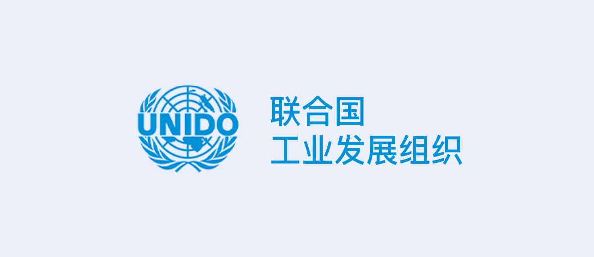
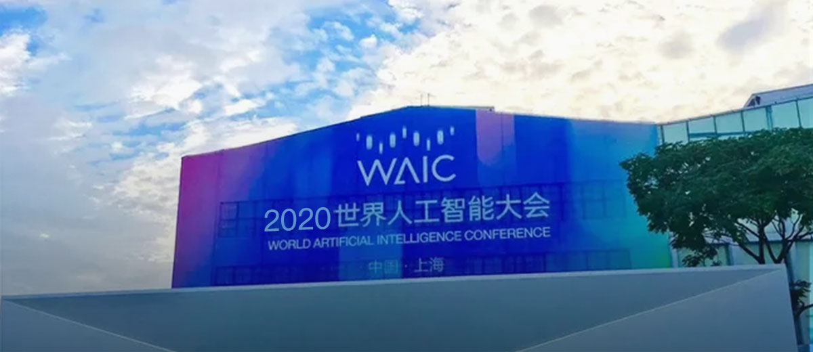
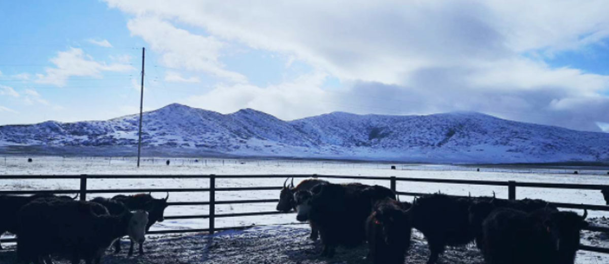
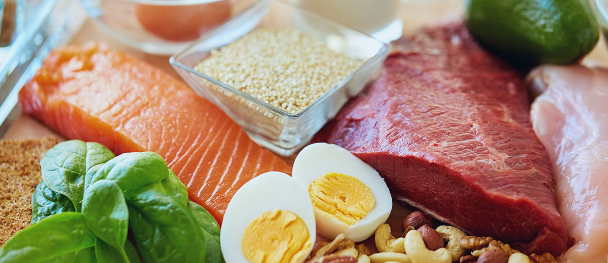
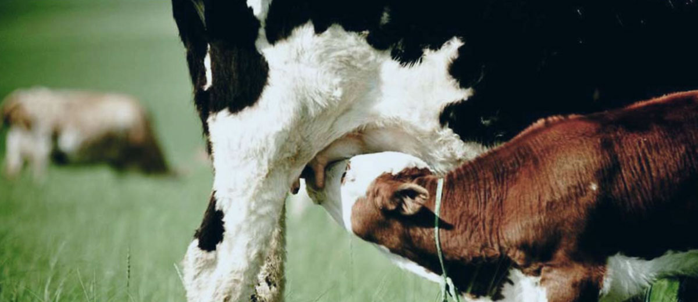
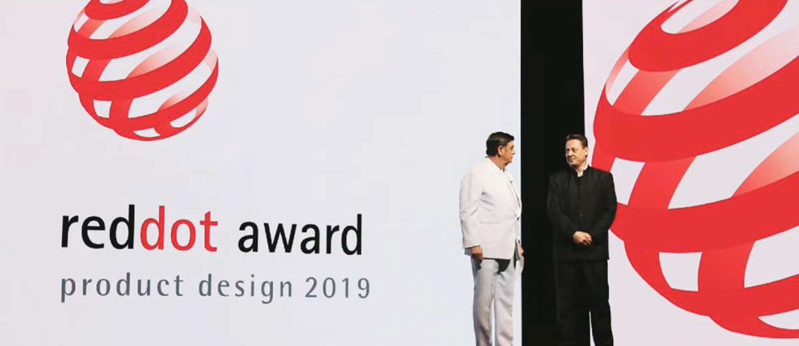
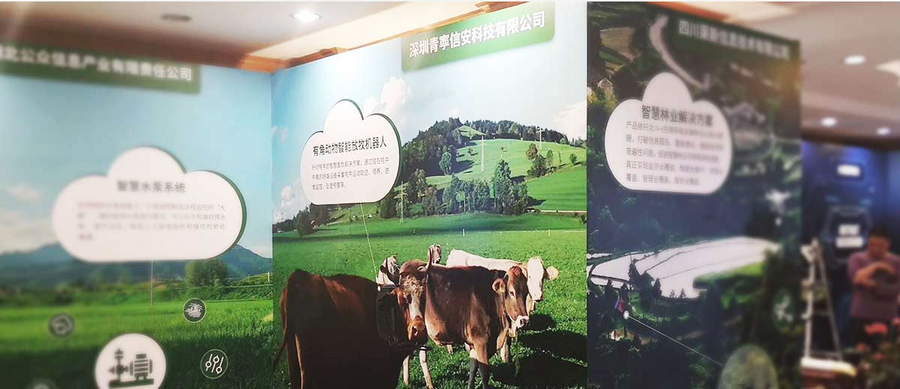
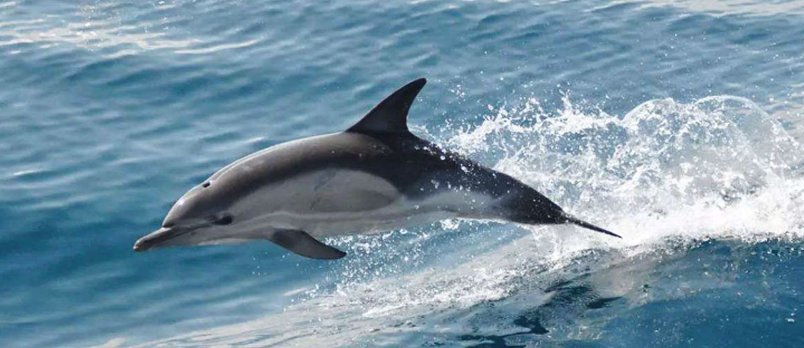

入选联合国工业发展组织发起的
“创新思维与技术应对新冠疫情”农业组排名第一
14
JULY
2020

由联合国工业发展组织全球投资与技术促进办公室网络（UNIDO ITPO Network）发起的「创新思维与技术应对新冠疫情」全球倡议获奖项目名单于7月14日重磅揭晓。经过从五个维度的评估：项目方案的创新性；环境、社会和经济层面的长期可持续性；在不同地理环境下的可拓展性；预期就业回报；申请方可投入的资金。青寕科技的智慧牧场项目入选农业组排名第一。
被新华网称为世界人工智能大会
八达镇馆黑科技之一
9
JULY
2020

受关注的2020世界人工智能大会于7月9日至11日在上海召开。丰富的科技展品、真切的应用场景。9大主题板块中，来自13个国家和地区150余家企业参展，外资企业参展率达25%。丰富的科技展品、真切的应用场景、活跃的项目路演，一场AI盛宴正在“云上”展示。7.5平方厘米的玻璃片中可储存达75.8GB的数据、华为Atlas900算力相当于50万台计算机、首次国内亮相的四足机器人不容小觑。青寕科技的智能放牧机器人向大家展示了如何应用物联网技术，解决牧民最关心的养牛存活率问题，包括早期发展生病牦牛及时医治、定位驱赶远离悬崖等，综合提升牧民的经济效益，被评为八大镇馆黑科技之一。

2020年1月青寕科技携手阿坝州红原县畜牧部门，针对高原牦牛养殖产业从传统化向智能化、科学化、精细化、数据化管理转型，专门定制搭建物联网软硬件系统，有效解决牦牛每年的高损失率和牛犊复壮问题，解决方案被纳入红原县畜牧版块十四五规划当中。
青寕科技荣获2019年
未来农业食品100强年度潜力企业
26
DEC
2019

2019年12月26日-12月27日，“2019未来农业食品百强·白马峰会”在南京举行。会上重磅发布“2019未来农业食品100强”榜及2019未来农业食品百强大会系列奖项，青寕科技获得2019未来农业食品100强潜力企业奖项。

2019年11月联合当雄净土牧场郭庆场，基于对牧场牦牛前12月的健康数据采集，针对亲情养育、牛犊孱弱、育肥难、出栏率低等缺乏技术及数据支撑的传统养殖管理局面，给出科学化、系统化的牛犊复壮解决方案，得到当雄畜牧部门的大力支持。
有角动物智能放牧机器人产品
荣获2019德国红点之星设计概念奖
8
JULY
2019

2019年7月8日晚，2019年德国红点奖颁奖典礼在德国Essen落下帷幕。2019年的红点奖总共吸引了全球超5500件作品参与评选，获得Red Dot:Best of the Best 的作品共有80件，仅占参赛作品1.45%。青寕科技的有角动物智能放牧机器人，荣获红点之星设计概念奖。
有角动物智能放牧机器人产品
荣获中国电信首届“天翼物联开发者大赛”总决赛三等奖
23
MAY
2019

019年5月23日，中国电信首届“天翼物联开发者大赛”总决赛于上海顺利举行。大赛聚集了来自全国各地的物联网创客开发者、产业链合作伙伴、政企渠道客户、投资机构、行业媒体等，共襄物联网创新盛宴。参赛企业全力以赴，彰显创客风采，现场精彩纷呈、惊喜不断。最终，杭州拓深科技有限公司得到评委的一致认可，夺得冠军。深圳共享电源科技有限公司、泰华智慧产业集团股份有限公司获二等奖，深圳青宁信安科技有限公司、空气道科技（北京）有限公司、四川爱联科技有限公司获三等奖，广州物道水务科技有限公司、四川莱斯信息技术有限公司等6个项目获优秀奖。
海洋救援产品
荣获2018年军民融合专业赛优胜奖
31
NOV
2018

2018年8月31日，以“新时代 新动能 新融合”为主题的2018中国创新创业大赛军民融合专业赛暨第七届中国创新创业大赛军转民大赛圆满落下帷幕。大赛自6月30日启动以来，受到了社会各界的广泛关注，国防军工企事业单位、创业企业和创新团队参赛激情高涨，共征集到来自384家单位的437个参赛项目。通过初赛、半决赛及决赛三场赛事的激烈角逐，最终20个项目获奖，青寕科技的海豚救援产品荣获2018军民融合专业赛优胜奖。